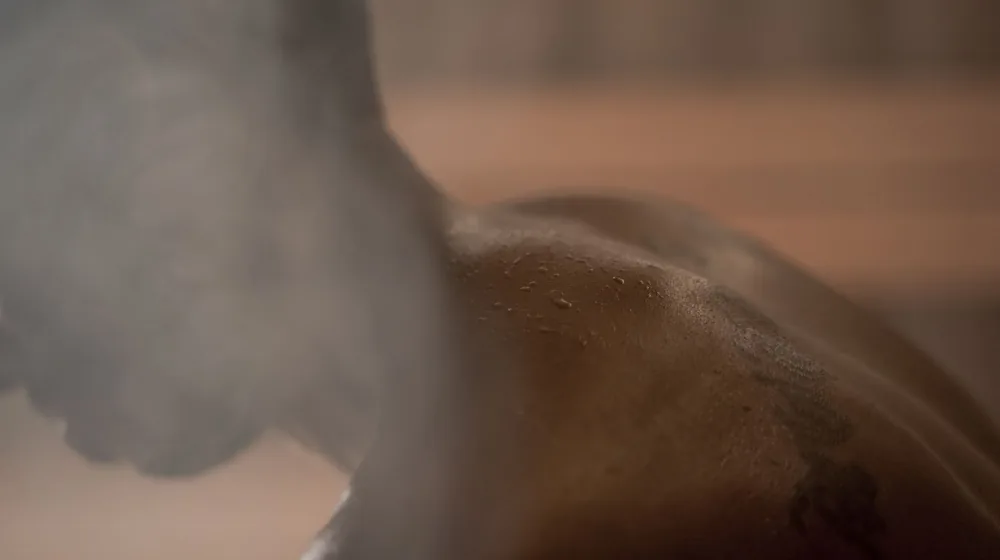

한방 스파, 내 몸에 딱 맞는 곳은? 유형별 완벽 비교 가이드
사진: Aan Amrin / Pexels (무료 이미지, 출처 표기)
몸과 마음을 다스리는 한방 스파, 어떤 곳을 선택해야 할지 고민이신가요?

바쁜 일상 속 지친 몸과 마음에 활력을 불어넣기 위해 한방 스파를 찾고 계신다면, 어떤 곳을 선택해야 할지 막막할 수 있습니다. 수많은 정보 속에서 나에게 꼭 맞는 한방 스파를 찾는 일은 쉽지 않죠. 이 글에서는 한방 스파의 종류부터 인기 프로그램 비교, 그리고 실패 없이 스파를 즐기기 위한 팁까지, 당신이 궁금해하는 모든 것을 정리해드립니다.
2026년 10월 현재, 변화하는 웰니스 트렌드 속에서 한방 스파는 단순히 몸을 쉬게 하는 것을 넘어, 동양의 지혜를 담은 치유 경험을 제공합니다. 이 가이드를 통해 자신에게 맞는 한방 스파를 찾고, 진정한 휴식과 건강을 되찾으시길 바랍니다.
한방 스파란 무엇이며, 왜 선택할까요?
한방 스파는 전통 한의학의 원리인 오장육부 조화, 기혈 순환 개선 등을 기반으로 하는 스파 프로그램입니다. 약재를 활용한 족욕, 아로마 마사지, 한방 좌훈, 침술과 같은 다양한 요법을 통해 몸의 균형을 되찾고 심신의 안정을 도모합니다. 서양식 스파가 주로 이완과 피부 미용에 초점을 맞춘다면, 한방 스파는 몸의 근본적인 문제 해결과 체질 개선에 더 깊이 관여한다는 점에서 차이가 있습니다.
스트레스, 만성 피로, 소화 불량, 불면증 등 현대인이 겪는 다양한 증상에 대해 자연 친화적인 접근법을 제공하며, 몸의 회복력을 높여주는 것이 한방 스파의 핵심 가치입니다. 특히 개인의 체질과 건강 상태에 맞춰 프로그램을 구성하는 경우가 많아 맞춤형 관리가 가능하다는 장점이 있습니다.
나에게 맞는 한방 스파 유형 찾기: 도심 vs. 휴양 vs. 특화
한방 스파는 크게 세 가지 유형으로 나눌 수 있습니다. 각 유형의 특징을 이해하면 자신의 목적과 상황에 맞는 스파를 선택하는 데 도움이 됩니다.
- 도심형 한방 스파: 주로 접근성이 좋은 도시 중심에 위치하며, 짧은 시간 내에 집중적인 관리를 받을 수 있는 프로그램이 많습니다. 직장인이나 바쁜 현대인에게 적합하며, 점심시간이나 퇴근 후에도 쉽게 방문할 수 있습니다. 예약 시스템이 잘 되어 있어 편리하게 이용 가능합니다.
- 자연 휴양형 한방 스파: 산림욕이나 온천 등 자연 친화적인 환경에 자리 잡고 있습니다. 숙박을 겸하며 장기적인 관리를 받거나, 자연 속에서 깊은 휴식을 취하고 싶은 분들에게 이상적입니다. 스트레스 해소와 전신 이완에 특히 효과적이며, 디톡스 프로그램이나 명상 클래스가 포함된 경우가 많습니다.
- 특정 테마/질환 집중형 스파: 여성 질환, 피부 질환, 면역력 강화, 산후조리 등 특정 건강 문제나 테마에 특화된 프로그램을 운영합니다. 전문 한의사의 상담을 통해 개인의 증상에 맞는 맞춤형 처방과 관리를 제공하는 것이 특징입니다. 특정 건강 개선을 목표로 한다면 이 유형을 고려해볼 수 있습니다.
인기 한방 스파 프로그램, 어떤 차이가 있을까?
한방 스파에서 제공하는 프로그램은 매우 다양합니다. 아래 표를 통해 주요 프로그램의 특징을 비교해보고, 자신에게 필요한 관리를 찾아보세요. 2026년 10월 기준, 일반적인 프로그램 구성과 특징입니다.
한방 스파, 제대로 즐기기 위한 체크리스트
성공적인 한방 스파 경험을 위해서는 몇 가지 준비가 필요합니다. 방문 전 아래 체크리스트를 확인해보세요.
- ✅ 건강 상태 확인: 임신 중이거나 특정 질환(고혈압, 심장병 등)이 있다면 스파 이용 전 반드시 전문가와 상담하고, 예약 시 미리 알리는 것이 좋습니다. 일부 프로그램은 제한될 수 있습니다.
- ✅ 전문가 상담 여부: 개인의 체질과 건강 상태에 맞는 맞춤형 관리를 원한다면, 한의사나 전문 상담사가 상주하며 정확한 진단을 내려주는 곳을 선택하는 것이 좋습니다.
- ✅ 프로그램 구성 및 소요 시간: 원하는 관리 내용이 포함되어 있는지, 총 소요 시간은 얼마나 되는지 미리 확인하여 일정에 무리가 없는지 점검합니다.
- ✅ 시설 및 위생 상태: 스파 시설의 청결도는 매우 중요합니다. 방문 후기나 사진을 통해 위생 상태를 미리 살펴보는 것이 좋습니다.
- ✅ 가격 및 포함 내역: 총 금액에 모든 서비스(마사지, 약재, 식사 등)가 포함되어 있는지 확인하고, 추가 비용이 발생할 수 있는 부분을 미리 문의합니다. 2026년 10월 기준, 가격대는 시설과 프로그램에 따라 크게 달라질 수 있으므로 반드시 개별 문의가 필요합니다.
- ✅ 주차 및 교통편: 자가용 이용 시 주차 가능 여부를 확인하고, 대중교통 이용 시 접근성을 미리 파악해두면 편리합니다.
예약부터 방문까지: 실패 없는 한방 스파 이용 가이드
한방 스파는 일반적으로 사전 예약제로 운영됩니다. 원하는 날짜와 시간에 서비스를 받기 위해서는 최소 며칠 전, 인기 있는 곳은 몇 주 전에 예약하는 것이 좋습니다. 전화나 온라인 웹사이트를 통해 예약하며, 이때 궁금한 점이나 특별히 원하는 관리 내용을 미리 문의할 수 있습니다.
방문 당일에는 편안한 옷차림으로 가는 것이 좋습니다. 스파에서 제공하는 가운으로 갈아입기 때문에 크게 신경 쓸 필요는 없지만, 속옷은 미리 편안한 것으로 준비하는 것이 좋습니다. 프로그램 시작 전 간단한 설문지를 작성하거나 상담을 통해 개인의 건강 상태와 불편한 점을 자세히 전달하는 것이 중요합니다. 이는 스파 전문가가 당신에게 가장 적합한 관리를 제공하는 데 큰 도움이 됩니다.
스파를 마친 후에는 충분한 휴식을 취하고, 따뜻한 물을 마셔 몸의 순환을 돕는 것이 좋습니다. 일부 한방 스파에서는 애프터 서비스나 차를 제공하기도 합니다. 이용 후 몸의 변화나 불편한 점이 있다면 해당 스파에 문의하거나 전문 의료기관과 상담하는 것을 권장합니다.
🔗 이 글도 함께 보면 좋아요: 내게 딱 맞는 클라우드 저장소? 주요 요금제별 완벽 비교 가이드